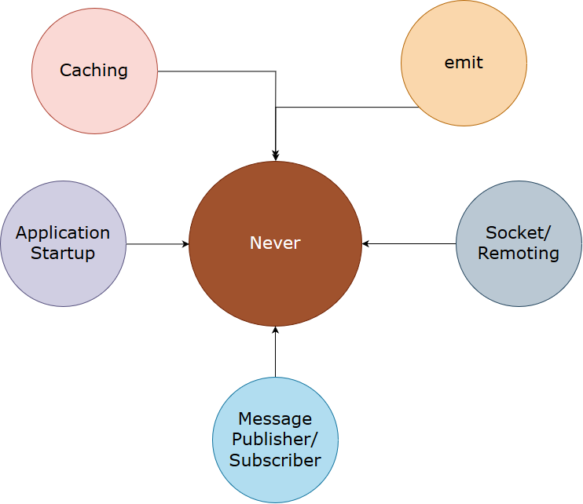
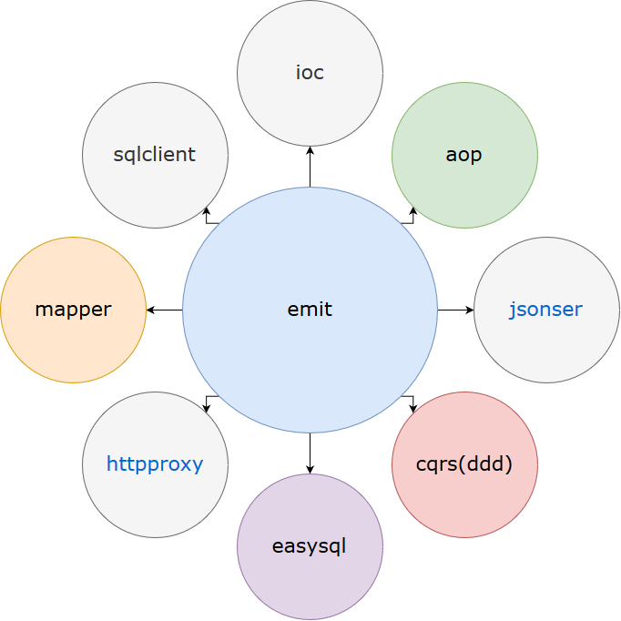

never是纯c#语言开发的一个框架，同时可在netcore下运行。 该框架github地址：https://github.com/shelldudu/never
同时，配合never_web，never_component，never_application （demo）可对比代码学习。
引用其图片说明该构架所涉及到的工具

使用emit技术所实现的核心功能点

其中使用包含了一些开发设计模式，比如message的订阅与发布，熔断机制等。
1、以ApplicationStartup开始，启动服务，注册不同组件，这里是netcore的部分代码
/// <summary>
/// 该方法被ConfigureServices里面的base.ConfigureServicese调用，由于ConfigureServices方法会使用不同的组件方案，所以在其后面启支，是将这些组件方案所注册的ioc规则加入到自己的ioc规则里面去
/// 同时替换了系统IServiceCollection自己生成的IServiceProvider对象
/// </summary>
/// <param name="sender"></param>
/// <param name="e"></param>
private void Startup_OnStarting(object sender, Never.StartupEventArgs e)
{
//ddd的command里面使用了恢复（即一些命令出错后被保存后过段时间再执行），当前使用sqlite本地数据库方式
var commandfile = new FileInfo(AppContext.BaseDirectory + "\\App_Data\\command_demo.db");
//ddd的event跟上面的一样
var eventfile = new FileInfo(AppContext.BaseDirectory + "\\App_Data\\event_demo.db");
//使用nlog组件
var logfile = new FileInfo(AppContext.BaseDirectory + "\\App_Config\\nlog.config");
//配置文件的读取
var configReader = new AppConfigReader(this.Configuration);
}我们先对程序集过滤与开启IoC
//注册程序集过滤，因为整个启动过程会分析程序集里面的Type对象，很多dll我们不用分析，只焦点到我们现在注入的2个规则就行，"Never" + "B2C",正则只要匹配到该字符就加加载到待分析的dll集合中
e.Startup.RegisterAssemblyFilter("B2C".CreateAssemblyFilter()).RegisterAssemblyFilter("Never".CreateAssemblyFilter());
//ioc分2种启动方法，主要原因如下：（1）服务启动有先后顺序，不同的系统组件所注册的顺序不同的，但有些组件要求在所有环境下都只有第一或最后启动（2）由于使用环境自动注册这种设计下，一些组件要手动注册会带自己的规则就会被自动注册覆盖
e.Startup.UseEasyIoC(
(x, y, z) =>
{
//先启动该服务注册组件，
},
(x, y, z) =>
{
//再按自己的个性化注册组件，比如Controller在下面UseApiDependency后会自动注入，但是我想HomeController注入的时候使用memecahed，这种情况就要手动注入了
//x.RegisterType<Controllers.HomeController, Controllers.HomeController>().WithParameter<Never.Caching.ICaching>("memcached");
//注入query与repository实例，为什么不用自动注入？哈哈，因为在framework或netcore等各种不同的环境下大家读取配置文件是不同的，一旦写死在B2C.Message.SqlData.Query里面读取配置文件，则使用不同的host技术就出现极大问题，
//比如netcore没有connectionString这种配置（或者有人说可以手动引用System.Configuration，这不是嫌麻烦吗）
x.RegisterInstance(new B2C.Message.SqlData.Query.QueryDaoBuilder(Infrastructure.SqldbType.sqlserver, () => configReader["message_conn"]));
x.RegisterInstance(new B2C.Message.SqlData.Repository.RepositoryDaoBuilder(Infrastructure.SqldbType.sqlserver, () => configReader["message_conn"]));
});注册各种组件
//使用环境下自动注册组件，
e.Startup.UseAutoInjectingAttributeUsingIoC(new IAutoInjectingEnvironmentProvider[]
{
//在message该环境下，所有单例注册组件只有匹配message的才注册，（1）有些组件是线程的，那么不会被描述和注入中，除非再加个线程provider；（2）即使是单例provider,但所运行不是message环境，所以也不会注入
SingletonAutoInjectingEnvironmentProvider.UsingRuleContainerAutoInjectingEnvironmentProvider("message"),
})
//使用统一配置中心读取配置文件，实用性在后面有讲到
.UseConfigClient(new IPEndPoint(IPAddress.Parse(configReader["config_host"]), configReader.IntInAppConfig("config_port")), out var configFileClient);
configFileClient.Startup(TimeSpan.FromMinutes(10), new[] { new ConfigFileClientRequest { FileName = "message_api" } }, (c, t) =>
{
var content = t;
if (c != null && c.FileName == "message_api")
{
System.IO.File.WriteAllText(System.IO.Path.Combine(this.Environment.ContentRootPath, "appsettings.app.json"), content);
}
}).Push("message_api").GetAwaiter().GetResult();
e.Startup
.UseCounterCache() //使用countcache
.UseConcurrentCache() //使用安全countcache
.UseDataContractJson() //使用datacontract技术的序列化，实现了IJsonSerialize接口
.UseEasyJson(string.Empty) //使用easyjson技术的序列化，实现了IJsonSerialize接口
.UseNLog(logfile) //使用nlog
.UseAppConfig(configReader) //将IConfigReader注入
.UseForceCheckAggregateRootImplIHandle() //这几个Force都是为了检查ddd开发一些要求，比如是否继承某个类，某些接口
.UseForceCheckCommandAppDomainAttribute() //检查所有的command是否带了特定attribute
.UseForceCheckCommandEvenWithNoParamaterCtor() //检查所有的commandhandler所要的构造参数是否被注入中
.UseForceCheckCommandHandlerCtor() //检查所有的eventhandler所要的构造参数是否被注入中
.UseForceCheckEventAppDomainAttribute()//检查所有的event是否带了特定attribute
.UseForceCheckEventHandlerCtor() //检查所有的eventhandler所要的构造参数是否被注入中
.UseForceCheckMessageSubscriberCtor() //使用消息的订单与发布
.UseInjectingCommandHandlerEventHandler(Never.IoC.ComponentLifeStyle.Singleton) //注入所有的commandhandler，在commandbus执行其对象行为
.UseSqliteEventProviderCommandBus<DefaultCommandContext>(new SqliteFailRecoveryStorager(commandfile, eventfile)) //使用cqrs组件，指定sqlite作为恢复组件，
.UseApiModelStateValidation() //mvc,webapi的模型参数验证
.UseApiActionCustomRoute(e.Collector as IServiceCollection) //自定义路由，相同于在controller可以使用httpget等route技术
.UseApiDependency(e.Collector as IServiceCollection);//注入所有的controller最后启动过程中检查整个系统是否正常
//配置中心更新配置文件后，系统不一定马上能重新加载
e.Startup.Startup(TimeSpan.FromSeconds(1), (x) =>
{
//我们在此启动看看所使用组件是否正常启动
using (var sc = x.ServiceLocator.BeginLifetimeScope())
{
sc.Resolve<ICommandBus>();
sc.Resolve<ILoggerBuilder>();
sc.Resolve<IJsonSerializer>();
var home = sc.Resolve<Controllers.MessageController>();
var logger = sc.Resolve<ILoggerBuilder>().Build(typeof(Startup));
logger.Info("startup at " + DateTime.Now.ToString("yyyy-MM-dd HH:mm:ss"));
}
});
}2、Controller的注入，使用构造函数的方法注入
private readonly IEmailCodeQuery emailCodeQuery = null;
private readonly IMobileCodeQuery mobileCodeQuery = null;
private readonly ICommandBus commandBus = null;
private readonly ILoggerBuilder loggerBuilder = null;
private readonly IJsonSerializer jsonSerializer = null;
public VCodeController(ICommandBus commandBus,
ILoggerBuilder loggerBuilder,
IJsonSerializer jsonSerializer,
IEmailCodeQuery emailCodeQuery,
IMobileCodeQuery mobileCodeQuery)
{
this.commandBus = commandBus;
this.loggerBuilder = loggerBuilder;
this.jsonSerializer = jsonSerializer;
this.emailCodeQuery = emailCodeQuery;
this.mobileCodeQuery = mobileCodeQuery;
}3、Action代码处理
/// <summary>
/// 校验邮箱验证码
/// </summary>
/// <param name="reqs"></param>
/// <returns></returns>
[ApiActionRemark("a9a900aee8c6", "HttpPost"), HttpPost]
public ApiResult<string> CheckEmailValidateCode(CheckEmailValidateCodeReqs reqs)
{
if (!this.TryValidateModel(reqs))
{
return Anonymous.NewApiResult(ApiStatus.Fail, string.Empty, this.ModelErrorMessage);
}
//实际上不用try + catch了，因为在startup统一日志处理了。
//发送命令后交给commandhandler去处理领域，commandbus + eventbus
var handler = this.commandBus.Send(new DestroyEmailCodeCommand(NewId.GenerateGuid())
{
Email = reqs.Email,
UsageType = reqs.UsageType,
VCode = reqs.VCode,
});
if (handler == null)
{
return Anonymous.NewApiResult(ApiStatus.Fail, string.Empty, "验证失败");
}
if (handler.Status != CommandHandlerStatus.Success)
{
return Anonymous.NewApiResult(ApiStatus.Error, string.Empty, this.HandlerMerssage(handler));
}
return Anonymous.NewApiResult(ApiStatus.Success, string.Empty);
}我们打开startup文件或global文件来看看，整个构架的初始化都在global或startup里面实现的，环境的搭建比较简单，可以直接开发业务而不关心组件实现方式。
摘要里面一些代码展示：
1、接口与实现使用IoC管理，加上灵活的AOP，可统一日志管理的管理
[Logger]
public class EmailCodeCommandHandler : ICommandHandler<CreateEmailCodeCommand>, ICommandHandler<DestroyEmailCodeCommand> { }2、对远程方法的调用，封装成本地调用方式
//实际上这里是web远程方法,使用代理生成类，带熔断，
var api = this.validateCodeService.CreateMobileValidateCode(new Message.Contract.Request.CreateMobileValidateCodeReqs()
{
Mobile = model.UserName,
ClientIP = this.GetAppIP(),
Platform = this.GetAppPlatform(),
Length = 4,
UsageType = Message.Contract.EnumTypes.UsageType.注册,
});3、友好的参数验证，用户自己加验证参数规则。
/// <summary>
/// 用户Model
/// </summary>
[Serializable, Validator(typeof(RequestValidator))]
public class UserViewModel
{
#region prop
/// <summary>
/// 用户名
/// </summary>
[DisplayName("用户名")]
public string UserName { get; set; }
#endregion prop
#region validator
private class RequestValidator : Validator<UserViewModel>
{
public override IEnumerable<KeyValuePair<Expression<Func<UserViewModel, object>>, string>> RuleFor(UserViewModel target)
{
if (target.UserName.IsNullOrWhiteSpace())
yield return new KeyValuePair<Expression<Func<UserViewModel, object>>, string>(m => m.UserName, "手机号码为空");
}
}
#endregion validator
}4、可靠的性能：json的序列化与反序列化，在反序列化timespan下（字符串："00:10:00")， 2700x + 32g内存1000万次测试，jsonnet 使用12.6秒（GC=3.7万），easyser使用2.6秒（GC=3.7K)，jil使用0.8秒（GC=1.2k）
5、简单的配置：系统初始化过程风格统一，还有组件eqsysql只需要xml文件 + 链接字符串，就可以实现ORM管理（如QueryForObject<T>，QueryForEnumerable<T>）